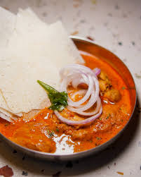

Kundapura Chicken Curry

Description
Kundapura Chicken Curry is a flavorful South Indian dish from Karnataka, known for its rich blend of spices and coconut. This aromatic curry pairs excellently with rice, roti, or traditional neer dosas.
Ingredients
- 1 kg chicken, cut into pieces
- 6-7 cloves
- 1 tsp peppercorns
- 1 tsp cumin seeds
- 4-5 cinnamon sticks
- 2 tsp coriander seeds
- 4-5 dried red chilies
- ½ coconut, grated
- 1 cup water
- 4 tbsp coconut oil
- ½ tsp cumin seeds
- 10-15 curry leaves
- 4 tbsp onions, chopped
- 4 tbsp tomatoes, chopped
- 6 tbsp prepared Kundapura masala paste
- 2 tsp salt (adjust to taste)
- 1 cup water
- Fresh cilantro leaves for garnish
Steps
- Prepare the Kundapura Masala Paste:
- Dry roast cloves, peppercorns, cumin seeds, cinnamon sticks, coriander seeds, dried red chilies, and grated coconut until aromatic.
- Allow the roasted ingredients to cool, then grind them with 1 cup of water to form a smooth paste. This is your Kundapura masala paste.
- Cook the Curry:
- Heat coconut oil in a pan over medium heat. Add cumin seeds and let them splutter.
- Add curry leaves and chopped onions; sauté until the onions turn golden brown.
- Stir in chopped tomatoes and cook until they soften and the oil begins to separate.
- Add the prepared Kundapura masala paste and cook for a few minutes until the oil separates again.
- Add the chicken pieces, ensuring they are well-coated with the masala. Cook for about 5 minutes until the chicken changes color.
- Pour in 1 cup of water, stir well, and bring the mixture to a boil.
- Reduce the heat, cover the pan, and let the chicken simmer for 20-25 minutes, or until it is cooked through and tender.
- Adjust salt to taste.
- Serve:
- Garnish the curry with fresh cilantro leaves.
- Serve hot with rice, roti, or traditional neer dosas.
Home